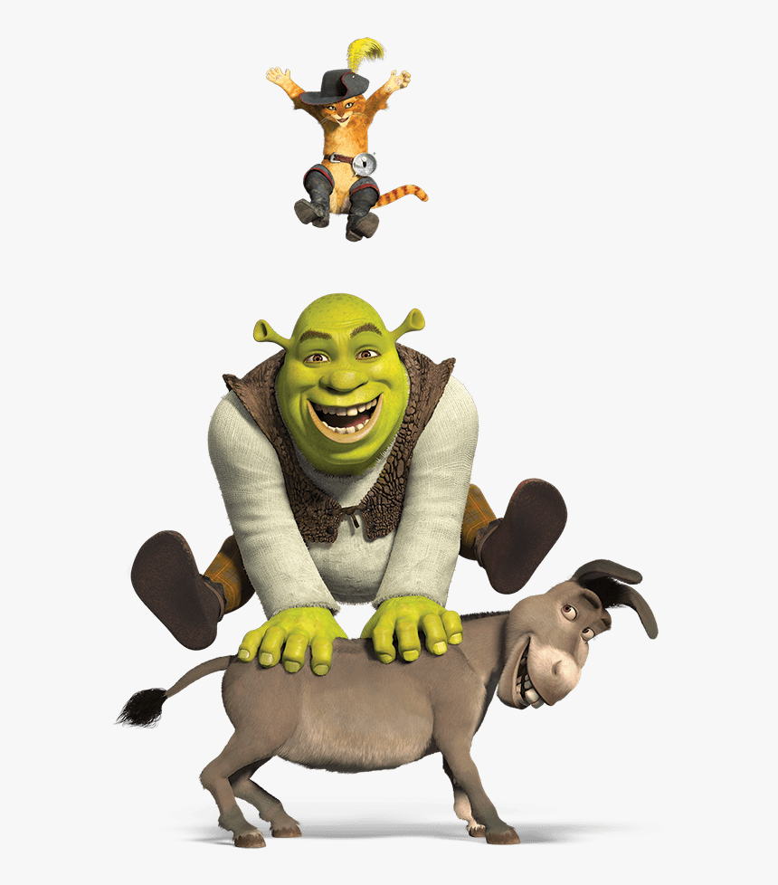

About Shrek
Shrek is an ogre. He's scary. Grrr! Jk. He's an awesome creature that is kind-hearted and sensitive. Plus, Shrek's green. The best color there is.
Shrek and his friends
Shrek's Characteristics
- He loves the solitude of his swamp
- He's mean-spirited
- But he's a good guy deep down
Shrek's friends
Shrek has some amazing friends: a talkative Donkey and a mischievous Puss in Boots. Their friendship and loyalty made Shrek less grumpy and lonely. Click on the links below to read more about them.